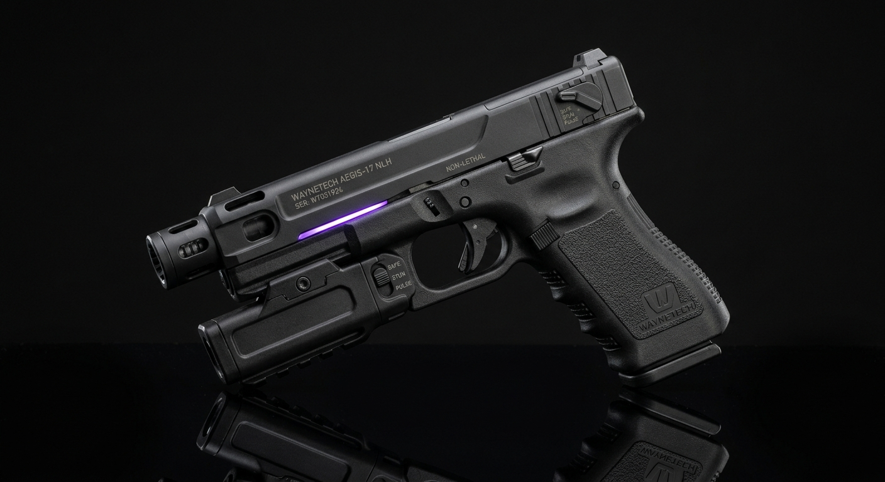
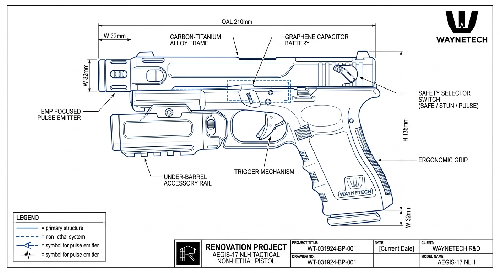

WAYNETECH SECURE-LINK: TECHNICAL SOLUTIONS FOR A SAFER INDUSTRY.
Système de défense // Protection et sécurisation avancée
Fiche Projet : AEGIS-17
- Classification :
- Document interne sécurisé
- Accès Restreint (Niveau 4)
- Nom de code officiel (B2B) :
- Taser sensibles.
- Usage réel sur le terrain :
- Taser lourdement modifiée, ultra-rapide et entièrement connectée.


Caractéristiques Générales
- Configuration
- Pistolet tactique non-létal, chargeur amovible
- Longueur totale (OAL)
- 210 mm
- Largeur
- 32 mm
- Masse à vide
- ~780 g
- Masse en charge
- ~850 g
- Matériau du châssis
- Alliage carbone-titane
SYSTÈME DE TIR
- Principe
- Impulsion électromagnétique focalisée (EMP)
- Source d'énergie
- Batterie de condensateurs au graphène
- Capacité
- 10 impulsions par charge (usage standard)
- Temps de recharge complète
- ~90 minutes
- Sélecteur de mode
- SAFE / STUN / PULSE
Performances
- Portée efficace (STUN)
- ~5 m
- Portée efficace (PULSE)
- ~10 m
- Temps d'incapacitation cible
- Quelques secondes (variable selon cible)
- Cadence entre impulsions
- ~2 s
- Signal caractéristique
- Arc électromagnétique visible violet
Autonomie & Emploi
- Autonomie (usage standard)
- 10 impulsions avant recharge
- Emploi
- Neutralisation non-létale, contrôle de foule, intervention rapprochée
- Utilisateurs prévus
- Forces de sécurité, agents de protection habilités
- Emploi
- Régional
- Formation requise
- Oui, certification WayneTech obligatoire
Déploiement
- Port ceinture ou holster tactique standard
- Utilisable en intérieur comme en extérieur
- Compatible avec rail sous canon pour accessoires (lampe, module additionnel)
- Aucune infrastructure spécifique requise pour l'usage courant
Signature
- Finition mate gris/noir anti-reflet
- Faible signature sonore comparée à une arme conventionnelle
- Éclair électromagnétique visible lors du tir (non discret)
- Aucune signature thermique prolongée après usage
Electronique Embarquée
- Émetteur d'impulsion focalisée
- Structure multi-fer supraconductrice interne
- Puce de traçabilité et sécurisation W Enterprises
- Diagnostic embarqué de charge restante
- Verrouillage électronique en cas d'usage non autorisé
Ergonomie & Prise en Main
- Crosse ergonomique unique, striée pour la préhension
- Grain de crosse antidérapant
- Détente unique, garde de détente renforcée
- Poids équilibré pour un tir à une main
Commandes
- Sélecteur SAFE / STUN / PULSE latéral, accessible au pouce
- Bouton de vérification de charge intégré
- Aucun recul mécanique (absence de partie mobile de type glissière)
Gestion Thermique
- Dissipation thermique passive du condensateur
- Coupure automatique en cas de surchauffe
- Refroidissement naturel entre les tirs successifs
- Pas d'usage en rafale prolongée
Systèmes
- Architecture électrique interne redondante
- Diagnostic prédictif de l'état de la batterie
- Verrouillage automatique en cas de chute détectée
- Mise à jour du firmware via connexion sécurisée
Protection
- Châssis renforcé résistant aux chocs
- Circuit de décharge protégé contre la surchauffe
- Bouton de sécurité mécanique additionnel
- Aucune munition létale, aucun risque de perforation
Technologies WayneTech
- Fusion — Diagnostic de charge et calibrage automatique de l'impulsion
- Vector — Optimisation de la décharge selon la distance estimée à la cible
- Gestion thermique WayneTech du module de condensateurs
- Wayne Emergency Mode — Décharge d'urgence à puissance réduite en cas de batterie faible
Communications
- Puce de traçabilité sécurisée
- Synchronisation avec le dossier d'usage de l'agent habilité
- Fonctionnement essentiel sans connexion WayneTech
Ecosystème WayneTech : AEGIS Assistance™
- Diagnostic à distance
- Pièces détachées
- Recharge et entretien du module condensateur
- Formation et certification à l'usage
- Support technique dédié
Contrôle Des Technologies Sensibles
- Utilisation des fonctions normales par le propriétaire habilité
- Puissance PULSE soumise à autorisation selon statut du client
- Verrouillage à distance possible en cas de perte ou de vol
- Contrôle des technologies propriétaires conservé par WayneTech